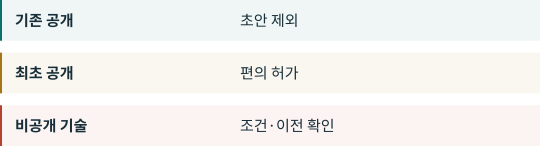

04. 중국 공개 모델의 미래¶
공개의 여러 의미¶

다운로드 가능한 가중치, 개방 라이선스, 재현에 충분한 학습 정보는 다릅니다. OSI 정의는 사용·연구·수정·공유의 자유와 데이터 정보·코드·매개변수를 요구합니다. 중국 규제의 법적 기준과도 별개입니다. OSI
DeepSeek R1은 코드·가중치의 MIT 라이선스와 증류판의 다른 계보를 설명합니다. Qwen3은 공개 모델과 Apache 2.0을 문서화합니다. 기존 공개의 사례이지 모든 모델이나 차기 버전의 보장은 아닙니다. R1 QWEN
주석1은 이미 공개된 기술을 제외하고 주석2는 제한 기술의 새 오픈소스 수출에 편의를 둡니다. 논문 공개가 비공개 가중치나 학습 코드 공개를 뜻하지는 않습니다. 실제 파일, 제한 다운로드, 나중의 비공개 개선을 따로 봅니다. 공고가 모든 경계 사례를 해결하지는 않습니다. CN-A1 CNQA
예측이 아닌 네 가능성¶
공개 지속. 명시적 편의가 이 가능성을 뒷받침합니다. 범위를 줄이는 새 규정이나 확인된 지연은 반대 증거가 됩니다. CN-A1
출시 전 준비 증가. 데이터, 기준, 공개 파일 기록이 늘 수 있습니다. 이는 우리의 추론이며 출시 지연을 입증하지 않습니다. CN-A1
제품 분화. 한 버전을 공개하고 더 강한 버전이나 특수 데이터를 비공개로 둘 수 있습니다. 사업 선택이지 공고 의무가 아닙니다. CN-A1
서비스 확대. 공식 서비스 구분이 이를 가능하게 하지만 가격, 지속성, 개인정보 보호, 다른 금지의 부재는 보장하지 않습니다. CNQA
확정 목록, 공개 정의, 자동 허가 절차, 새 체크포인트, 미국 칩 규정을 관찰합니다. 중국 공개 모델이 끝날 날짜나 확률을 제시할 근거는 없습니다. 버전·라이선스·다운로드일·후속 변경을 보관하자는 제안은 새로운 법적 의무가 아닙니다. CN-A1 EAR742 EAR744